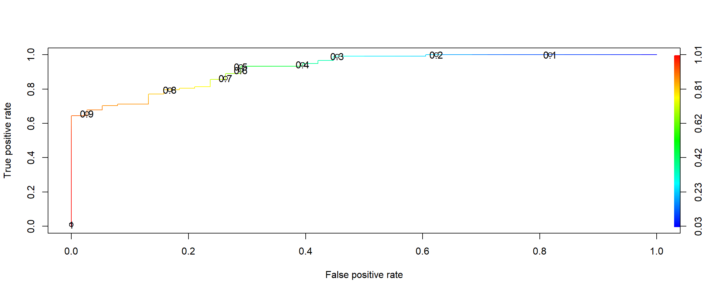

R Notebook
Parkinson’s disease (PD) is a neurodegenerative disorder that affects predominately dopamine-producing neurons in a specific area of the brain called substantia nigra.
Symptoms generally develop slowly over years. The progression of symptoms is often a bit different from one person to another due to the diversity of the disease. People with PD may experience:
Tremor, mainly at rest and described as pill rolling tremor in hands. Other forms of tremor are possible Slowness of movements (bradykinesia) Limb rigidity Gait and balance problems Let’s come to the dataset. This dataset is from UCI Machine Learning Repository.This dataset is composed of a range of biomedical voice measurements from 31 people, 23 with Parkinson’s disease (PD). Each column in the table is a particular voice measure, and each row corresponds one of 195 voice recording from these individuals (“name” column). The main aim of the data is to discriminate healthy people from those with PD, according to “status” column which is set to 0 for healthy and 1 for PD.
Our problem is to predict any individual as healthy or not. Parkinson’s disease (PD) is a neurodegenerative disorder that affects predominately dopamine-producing neurons in a specific area of the brain called substantia nigra.
Symptoms generally develop slowly over years. The progression of symptoms is often a bit different from one person to another due to the diversity of the disease. People with PD may experience:
Tremor, mainly at rest and described as pill rolling tremor in hands. Other forms of tremor are possible Slowness of movements (bradykinesia) Limb rigidity Gait and balance problems Let’s come to the dataset. This dataset is from UCI Machine Learning Repository.This dataset is composed of a range of biomedical voice measurements from 31 people, 23 with Parkinson’s disease (PD). Each column in the table is a particular voice measure, and each row corresponds one of 195 voice recording from these individuals (“name” column). The main aim of the data is to discriminate healthy people from those with PD, according to “status” column which is set to 0 for healthy and 1 for PD. We will be using Logistic Regression.
Our problem is to predict any individual as healthy or not.
data <- read.csv(file = 'parkinsons.data')We have our data set called “data”. Let’s get a view and summary of the dataset.
head(data,6)## name MDVP.Fo.Hz. MDVP.Fhi.Hz. MDVP.Flo.Hz. MDVP.Jitter...
## 1 phon_R01_S01_1 119.992 157.302 74.997 0.00784
## 2 phon_R01_S01_2 122.400 148.650 113.819 0.00968
## 3 phon_R01_S01_3 116.682 131.111 111.555 0.01050
## 4 phon_R01_S01_4 116.676 137.871 111.366 0.00997
## 5 phon_R01_S01_5 116.014 141.781 110.655 0.01284
## 6 phon_R01_S01_6 120.552 131.162 113.787 0.00968
## MDVP.Jitter.Abs. MDVP.RAP MDVP.PPQ Jitter.DDP MDVP.Shimmer MDVP.Shimmer.dB.
## 1 0.00007 0.00370 0.00554 0.01109 0.04374 0.426
## 2 0.00008 0.00465 0.00696 0.01394 0.06134 0.626
## 3 0.00009 0.00544 0.00781 0.01633 0.05233 0.482
## 4 0.00009 0.00502 0.00698 0.01505 0.05492 0.517
## 5 0.00011 0.00655 0.00908 0.01966 0.06425 0.584
## 6 0.00008 0.00463 0.00750 0.01388 0.04701 0.456
## Shimmer.APQ3 Shimmer.APQ5 MDVP.APQ Shimmer.DDA NHR HNR status RPDE
## 1 0.02182 0.03130 0.02971 0.06545 0.02211 21.033 1 0.414783
## 2 0.03134 0.04518 0.04368 0.09403 0.01929 19.085 1 0.458359
## 3 0.02757 0.03858 0.03590 0.08270 0.01309 20.651 1 0.429895
## 4 0.02924 0.04005 0.03772 0.08771 0.01353 20.644 1 0.434969
## 5 0.03490 0.04825 0.04465 0.10470 0.01767 19.649 1 0.417356
## 6 0.02328 0.03526 0.03243 0.06985 0.01222 21.378 1 0.415564
## DFA spread1 spread2 D2 PPE
## 1 0.815285 -4.813031 0.266482 2.301442 0.284654
## 2 0.819521 -4.075192 0.335590 2.486855 0.368674
## 3 0.825288 -4.443179 0.311173 2.342259 0.332634
## 4 0.819235 -4.117501 0.334147 2.405554 0.368975
## 5 0.823484 -3.747787 0.234513 2.332180 0.410335
## 6 0.825069 -4.242867 0.299111 2.187560 0.357775dim(data)## [1] 195 24na = colSums(is.na(data))no missing values.
So “status” is our variable of interest. We would like to predict the class of the ‘status’ of any individuals. It’s a classification problem. We are going to use various classification algorithm for this problem. # Feature scaling
data[,- c(1,18)] <- scale(data[,-c(1,18)])#define the columns that contain your abundance data. Change the number after the “:” to subset your data
com = data[,2:23]Now create a correlation matrix with your community composition data using the command ‘cor’
cc = cor(com, method = "spearman")Now you have a correlation matrix that contains correlation coefficients for every pairwise combination of variables in our data and Spearman captures all types of positive or negative relationships Spearman correlation: is a non-parametric measure of rank correlation and assesses how well a relationship between two variables can be described using a monotonic function. The easiest way to visualize this correlation matrix is using the function “ggcorrplot” from the package ggcorrplot
library(ggcorrplot)## Warning: package 'ggcorrplot' was built under R version 4.0.2## Loading required package: ggplot2ggcorrplot(cc,hc.order="TRUE") It is clear that correlated features means that they bring the same information, so it is logical to remove one of them. When we have highly correlated features, the variance will be large.
It is clear that correlated features means that they bring the same information, so it is logical to remove one of them. When we have highly correlated features, the variance will be large.
Removing the highly correlated variables
data <- subset(data, select = -c(1,5,6,8,10,11,12,14))Now we have removed the highly correlated variables from the dataset.
now we age going to split our data into training and test data
library(caTools)## Warning: package 'caTools' was built under R version 4.0.2split=sample.split(data$status,SplitRatio = .80)
train=subset(data,split==T)
test=subset(data,split==F)Model fitting
library(caret)## Warning: package 'caret' was built under R version 4.0.2## Loading required package: latticemodel.lg= glm(data=train,status~.,family = "binomial")
summary(model.lg)##
## Call:
## glm(formula = status ~ ., family = "binomial", data = train)
##
## Deviance Residuals:
## Min 1Q Median 3Q Max
## -2.31437 0.00076 0.14340 0.46944 1.51033
##
## Coefficients:
## Estimate Std. Error z value Pr(>|z|)
## (Intercept) 2.99410 0.64879 4.615 3.93e-06 ***
## MDVP.Fo.Hz. -0.19547 0.57553 -0.340 0.7341
## MDVP.Fhi.Hz. -0.38079 0.31915 -1.193 0.2328
## MDVP.Flo.Hz. -0.16669 0.41322 -0.403 0.6867
## MDVP.RAP 105.86528 333.98426 0.317 0.7513
## Jitter.DDP -105.46509 334.08093 -0.316 0.7522
## Shimmer.APQ5 3.55687 2.53603 1.403 0.1608
## Shimmer.DDA -1.54424 1.94399 -0.794 0.4270
## NHR -0.43209 1.32366 -0.326 0.7441
## HNR 0.93949 0.79570 1.181 0.2377
## RPDE -0.75227 0.46160 -1.630 0.1032
## DFA -0.07844 0.46428 -0.169 0.8658
## spread1 1.72490 2.01049 0.858 0.3909
## spread2 0.76783 0.43263 1.775 0.0759 .
## D2 0.66779 0.49669 1.344 0.1788
## PPE 0.51963 2.13568 0.243 0.8078
## ---
## Signif. codes: 0 '***' 0.001 '**' 0.01 '*' 0.05 '.' 0.1 ' ' 1
##
## (Dispersion parameter for binomial family taken to be 1)
##
## Null deviance: 173.217 on 155 degrees of freedom
## Residual deviance: 88.727 on 140 degrees of freedom
## AIC: 120.73
##
## Number of Fisher Scoring iterations: 7step(model.lg,direction="backward")## Start: AIC=120.73
## status ~ MDVP.Fo.Hz. + MDVP.Fhi.Hz. + MDVP.Flo.Hz. + MDVP.RAP +
## Jitter.DDP + Shimmer.APQ5 + Shimmer.DDA + NHR + HNR + RPDE +
## DFA + spread1 + spread2 + D2 + PPE
##
## Df Deviance AIC
## - DFA 1 88.756 118.76
## - PPE 1 88.784 118.78
## - Jitter.DDP 1 88.827 118.83
## - MDVP.RAP 1 88.828 118.83
## - NHR 1 88.836 118.84
## - MDVP.Fo.Hz. 1 88.843 118.84
## - MDVP.Flo.Hz. 1 88.891 118.89
## - Shimmer.DDA 1 89.336 119.34
## - spread1 1 89.696 119.70
## - HNR 1 90.145 120.14
## - MDVP.Fhi.Hz. 1 90.181 120.18
## - D2 1 90.647 120.65
## <none> 88.727 120.73
## - Shimmer.APQ5 1 90.799 120.80
## - RPDE 1 91.518 121.52
## - spread2 1 92.048 122.05
##
## Step: AIC=118.76
## status ~ MDVP.Fo.Hz. + MDVP.Fhi.Hz. + MDVP.Flo.Hz. + MDVP.RAP +
## Jitter.DDP + Shimmer.APQ5 + Shimmer.DDA + NHR + HNR + RPDE +
## spread1 + spread2 + D2 + PPE
##
## Df Deviance AIC
## - PPE 1 88.809 116.81
## - NHR 1 88.837 116.84
## - MDVP.Fo.Hz. 1 88.843 116.84
## - Jitter.DDP 1 88.849 116.85
## - MDVP.RAP 1 88.849 116.85
## - MDVP.Flo.Hz. 1 88.962 116.96
## - Shimmer.DDA 1 89.376 117.38
## - spread1 1 89.827 117.83
## - HNR 1 90.172 118.17
## - MDVP.Fhi.Hz. 1 90.183 118.18
## <none> 88.756 118.76
## - D2 1 90.807 118.81
## - Shimmer.APQ5 1 90.809 118.81
## - RPDE 1 91.642 119.64
## - spread2 1 92.157 120.16
##
## Step: AIC=116.81
## status ~ MDVP.Fo.Hz. + MDVP.Fhi.Hz. + MDVP.Flo.Hz. + MDVP.RAP +
## Jitter.DDP + Shimmer.APQ5 + Shimmer.DDA + NHR + HNR + RPDE +
## spread1 + spread2 + D2
##
## Df Deviance AIC
## - MDVP.Fo.Hz. 1 88.887 114.89
## - NHR 1 88.894 114.89
## - Jitter.DDP 1 88.895 114.89
## - MDVP.RAP 1 88.896 114.90
## - MDVP.Flo.Hz. 1 89.028 115.03
## - Shimmer.DDA 1 89.537 115.54
## - HNR 1 90.226 116.23
## - MDVP.Fhi.Hz. 1 90.370 116.37
## <none> 88.809 116.81
## - D2 1 90.837 116.84
## - Shimmer.APQ5 1 91.104 117.10
## - RPDE 1 91.664 117.66
## - spread2 1 92.158 118.16
## - spread1 1 97.461 123.46
##
## Step: AIC=114.89
## status ~ MDVP.Fhi.Hz. + MDVP.Flo.Hz. + MDVP.RAP + Jitter.DDP +
## Shimmer.APQ5 + Shimmer.DDA + NHR + HNR + RPDE + spread1 +
## spread2 + D2
##
## Df Deviance AIC
## - NHR 1 88.949 112.95
## - Jitter.DDP 1 88.960 112.96
## - MDVP.RAP 1 88.961 112.96
## - MDVP.Flo.Hz. 1 89.375 113.38
## - Shimmer.DDA 1 89.563 113.56
## - HNR 1 90.721 114.72
## - MDVP.Fhi.Hz. 1 90.829 114.83
## - D2 1 90.838 114.84
## <none> 88.887 114.89
## - Shimmer.APQ5 1 91.111 115.11
## - RPDE 1 91.666 115.67
## - spread2 1 92.363 116.36
## - spread1 1 100.573 124.57
##
## Step: AIC=112.95
## status ~ MDVP.Fhi.Hz. + MDVP.Flo.Hz. + MDVP.RAP + Jitter.DDP +
## Shimmer.APQ5 + Shimmer.DDA + HNR + RPDE + spread1 + spread2 +
## D2
##
## Df Deviance AIC
## - Jitter.DDP 1 89.031 111.03
## - MDVP.RAP 1 89.031 111.03
## - MDVP.Flo.Hz. 1 89.377 111.38
## - Shimmer.DDA 1 89.589 111.59
## - D2 1 90.899 112.90
## <none> 88.949 112.95
## - MDVP.Fhi.Hz. 1 90.954 112.95
## - Shimmer.APQ5 1 91.130 113.13
## - HNR 1 91.168 113.17
## - RPDE 1 91.769 113.77
## - spread2 1 92.376 114.38
## - spread1 1 103.852 125.85
##
## Step: AIC=111.03
## status ~ MDVP.Fhi.Hz. + MDVP.Flo.Hz. + MDVP.RAP + Shimmer.APQ5 +
## Shimmer.DDA + HNR + RPDE + spread1 + spread2 + D2
##
## Df Deviance AIC
## - MDVP.RAP 1 89.041 109.04
## - MDVP.Flo.Hz. 1 89.468 109.47
## - Shimmer.DDA 1 89.703 109.70
## - MDVP.Fhi.Hz. 1 91.023 111.02
## <none> 89.031 111.03
## - D2 1 91.065 111.06
## - Shimmer.APQ5 1 91.335 111.33
## - HNR 1 91.477 111.48
## - RPDE 1 91.800 111.80
## - spread2 1 92.517 112.52
## - spread1 1 104.168 124.17
##
## Step: AIC=109.04
## status ~ MDVP.Fhi.Hz. + MDVP.Flo.Hz. + Shimmer.APQ5 + Shimmer.DDA +
## HNR + RPDE + spread1 + spread2 + D2
##
## Df Deviance AIC
## - MDVP.Flo.Hz. 1 89.514 107.51
## - Shimmer.DDA 1 89.720 107.72
## - MDVP.Fhi.Hz. 1 91.027 109.03
## <none> 89.041 109.04
## - D2 1 91.127 109.13
## - Shimmer.APQ5 1 91.398 109.40
## - HNR 1 91.779 109.78
## - RPDE 1 91.926 109.93
## - spread2 1 92.546 110.55
## - spread1 1 105.082 123.08
##
## Step: AIC=107.51
## status ~ MDVP.Fhi.Hz. + Shimmer.APQ5 + Shimmer.DDA + HNR + RPDE +
## spread1 + spread2 + D2
##
## Df Deviance AIC
## - Shimmer.DDA 1 90.147 106.15
## - MDVP.Fhi.Hz. 1 91.445 107.44
## <none> 89.514 107.51
## - D2 1 91.598 107.60
## - Shimmer.APQ5 1 91.785 107.78
## - HNR 1 92.063 108.06
## - RPDE 1 92.200 108.20
## - spread2 1 93.156 109.16
## - spread1 1 109.181 125.18
##
## Step: AIC=106.15
## status ~ MDVP.Fhi.Hz. + Shimmer.APQ5 + HNR + RPDE + spread1 +
## spread2 + D2
##
## Df Deviance AIC
## - MDVP.Fhi.Hz. 1 91.801 105.80
## <none> 90.147 106.15
## - D2 1 92.579 106.58
## - RPDE 1 92.725 106.72
## - HNR 1 93.227 107.23
## - spread2 1 93.360 107.36
## - Shimmer.APQ5 1 95.028 109.03
## - spread1 1 111.964 125.96
##
## Step: AIC=105.8
## status ~ Shimmer.APQ5 + HNR + RPDE + spread1 + spread2 + D2
##
## Df Deviance AIC
## - D2 1 93.615 105.61
## <none> 91.801 105.80
## - RPDE 1 94.865 106.86
## - spread2 1 95.416 107.42
## - HNR 1 95.474 107.47
## - Shimmer.APQ5 1 97.335 109.33
## - spread1 1 117.023 129.02
##
## Step: AIC=105.62
## status ~ Shimmer.APQ5 + HNR + RPDE + spread1 + spread2
##
## Df Deviance AIC
## <none> 93.615 105.61
## - HNR 1 95.929 105.93
## - Shimmer.APQ5 1 99.080 109.08
## - spread2 1 99.586 109.59
## - RPDE 1 100.976 110.98
## - spread1 1 120.415 130.41##
## Call: glm(formula = status ~ Shimmer.APQ5 + HNR + RPDE + spread1 +
## spread2, family = "binomial", data = train)
##
## Coefficients:
## (Intercept) Shimmer.APQ5 HNR RPDE spread1
## 2.9823 1.9260 0.8514 -0.9075 2.7017
## spread2
## 0.8675
##
## Degrees of Freedom: 155 Total (i.e. Null); 150 Residual
## Null Deviance: 173.2
## Residual Deviance: 93.62 AIC: 105.6The Akaike information criterion (AIC) is an estimator of out-of-sample prediction error and thereby relative quality of statistical models for a given set of data.Lower AIC values indicate a better-fit model
We will select the model with lowest AIC that is status ~ Shimmer.APQ5 + NHR + RPDE + spread1 + spread2
final.model= glm(formula = status ~ Shimmer.APQ5 + NHR + RPDE + spread1 +
spread2, family = "binomial", data = train)
summary(final.model)##
## Call:
## glm(formula = status ~ Shimmer.APQ5 + NHR + RPDE + spread1 +
## spread2, family = "binomial", data = train)
##
## Deviance Residuals:
## Min 1Q Median 3Q Max
## -2.36619 0.00401 0.17043 0.51684 1.89265
##
## Coefficients:
## Estimate Std. Error z value Pr(>|z|)
## (Intercept) 2.6881 0.4877 5.512 3.55e-08 ***
## Shimmer.APQ5 1.2078 0.7420 1.628 0.10357
## NHR -0.6103 0.7090 -0.861 0.38941
## RPDE -1.0054 0.3486 -2.884 0.00393 **
## spread1 2.4804 0.5960 4.162 3.16e-05 ***
## spread2 0.9544 0.3723 2.564 0.01036 *
## ---
## Signif. codes: 0 '***' 0.001 '**' 0.01 '*' 0.05 '.' 0.1 ' ' 1
##
## (Dispersion parameter for binomial family taken to be 1)
##
## Null deviance: 173.217 on 155 degrees of freedom
## Residual deviance: 95.116 on 150 degrees of freedom
## AIC: 107.12
##
## Number of Fisher Scoring iterations: 7We will check our model’s accuracy now. First we will use our training data.
Fitting the model
train$pred<-fitted(final.model)Predicting the train dataset
library(ROCR)## Warning: package 'ROCR' was built under R version 4.0.2pred <-prediction(train$pred,train$status)Create Performance Objects and plotting graph
perf<-performance(pred,"tpr","fpr")
plot(perf,colorize = T,print.cutoffs.at = seq(0.1,by = 0.1)) With the use of ROC curve we can observe that 0.8 is having better sensitivity and specificity.There we select 0.8 as our cutoff to distinguish.
pre <- as.numeric(predict(final.model,type="response")>0.8)creating the confusion matrix
confusionMatrix(table(pre,train$status))## Confusion Matrix and Statistics
##
##
## pre 0 1
## 0 32 26
## 1 6 92
##
## Accuracy : 0.7949
## 95% CI : (0.7229, 0.8553)
## No Information Rate : 0.7564
## P-Value [Acc > NIR] : 0.1521771
##
## Kappa : 0.5276
##
## Mcnemar's Test P-Value : 0.0007829
##
## Sensitivity : 0.8421
## Specificity : 0.7797
## Pos Pred Value : 0.5517
## Neg Pred Value : 0.9388
## Prevalence : 0.2436
## Detection Rate : 0.2051
## Detection Prevalence : 0.3718
## Balanced Accuracy : 0.8109
##
## 'Positive' Class : 0
## Accuracy of training data From confusion matrix of training data, we come to know that our model is 82.40% accurate.
Now validating the model on testing data
pre <- as.numeric(predict(final.model,newdata=test,type="response")>0.8)# type = “response” is used to get the outcome in the form of probability of having parkinson’s disease. As we know that, for training data the cutoff has been 0.8.Similarly the testing data will also have the same threshold or cutoff.
making the confusion matrix
confusionMatrix(table(pre,test$status))## Confusion Matrix and Statistics
##
##
## pre 0 1
## 0 8 6
## 1 2 23
##
## Accuracy : 0.7949
## 95% CI : (0.6354, 0.907)
## No Information Rate : 0.7436
## P-Value [Acc > NIR] : 0.2988
##
## Kappa : 0.5244
##
## Mcnemar's Test P-Value : 0.2888
##
## Sensitivity : 0.8000
## Specificity : 0.7931
## Pos Pred Value : 0.5714
## Neg Pred Value : 0.9200
## Prevalence : 0.2564
## Detection Rate : 0.2051
## Detection Prevalence : 0.3590
## Balanced Accuracy : 0.7966
##
## 'Positive' Class : 0
## Balanced Accuracy of Testing data is 79.66%
To check how much of our predicted values lie inside the curve
auc<-performance(pred,"auc")
auc@y.values## [[1]]
## [1] 0.9159233We can conclude that we are getting an accuracy of 79.66 %. Also our misclassifcation rate is 20.34%